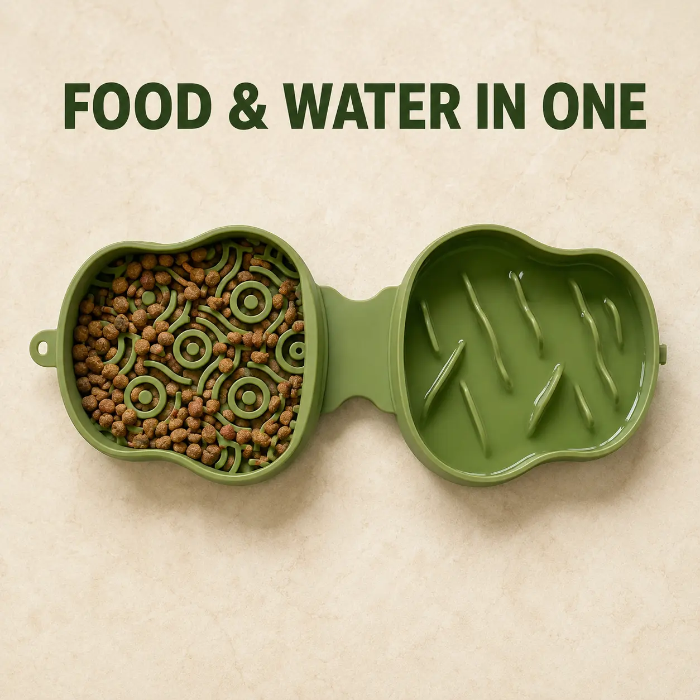
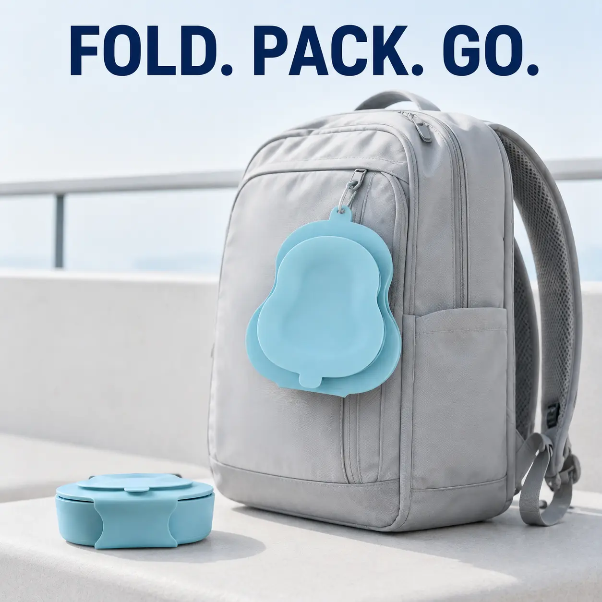
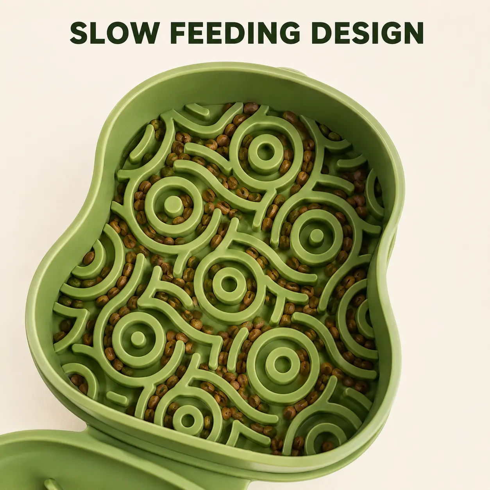
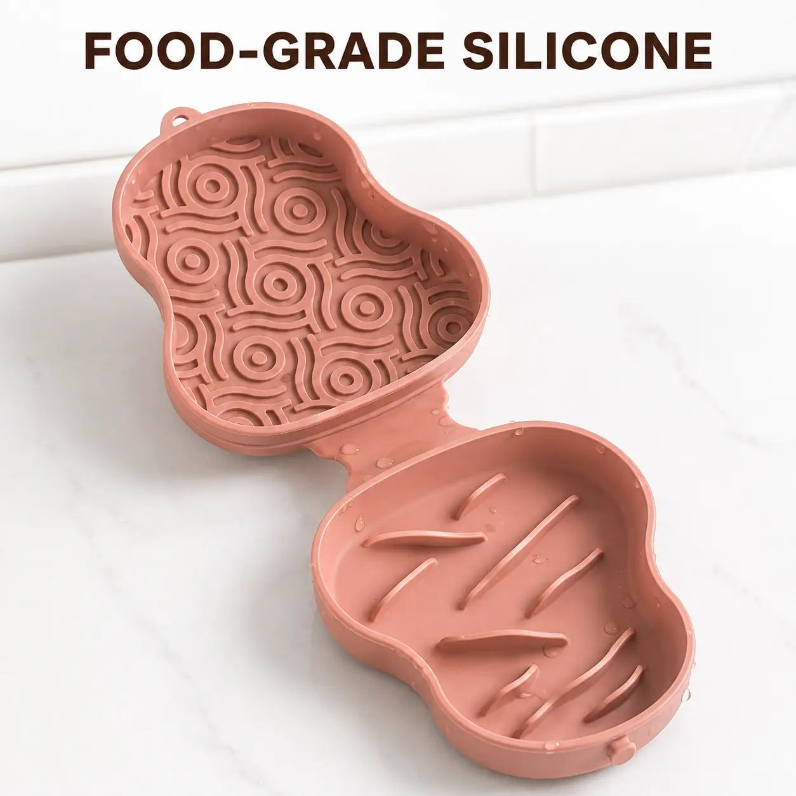
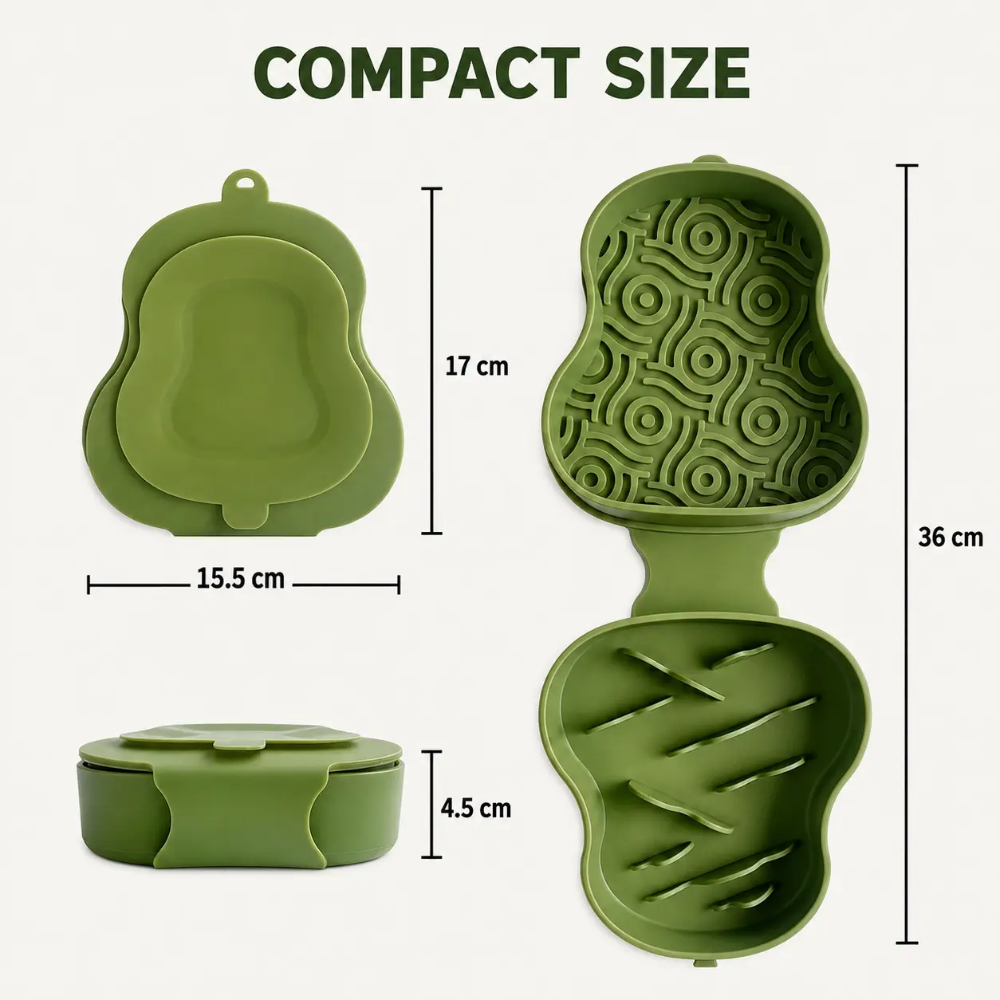
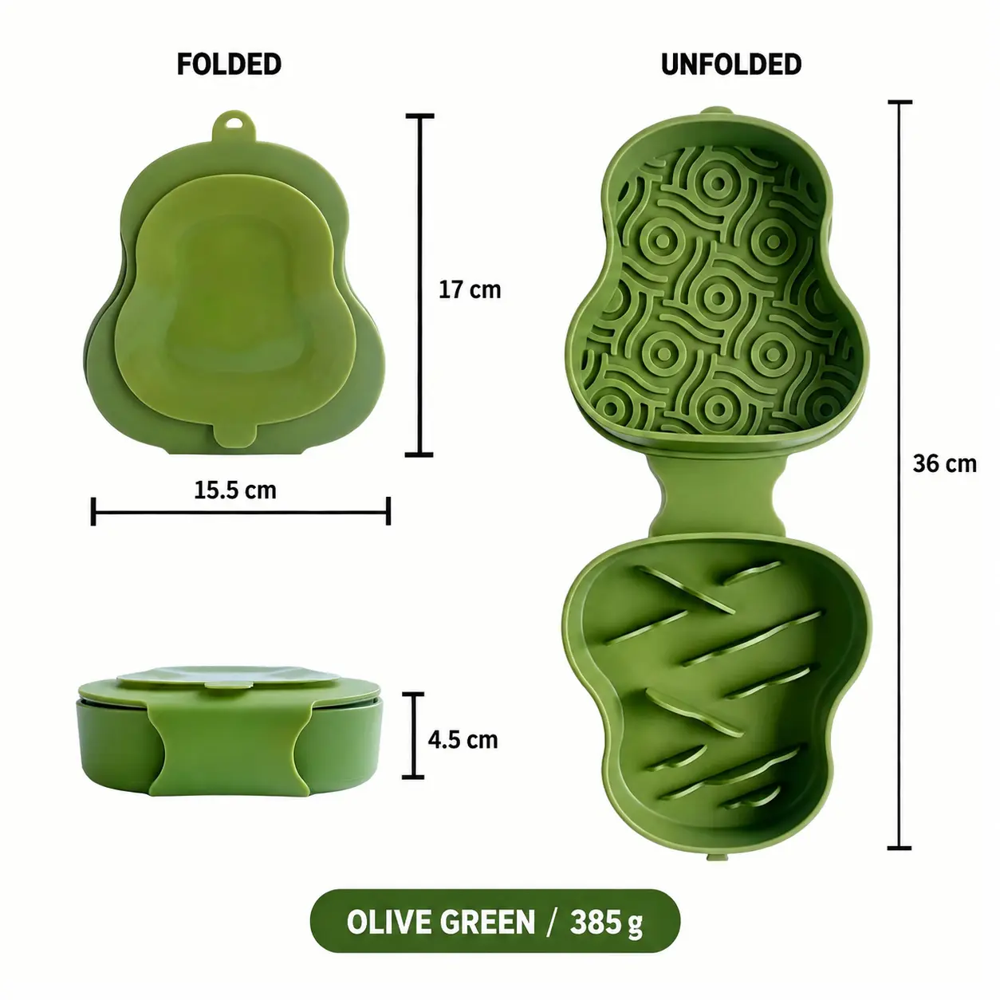
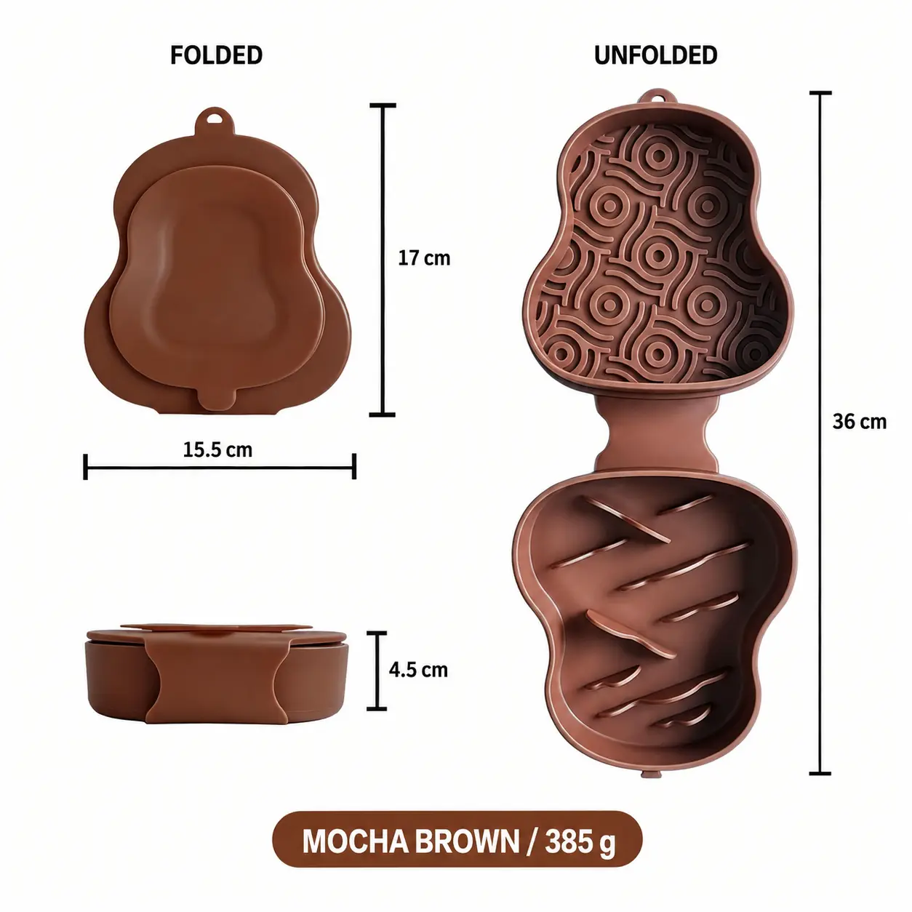
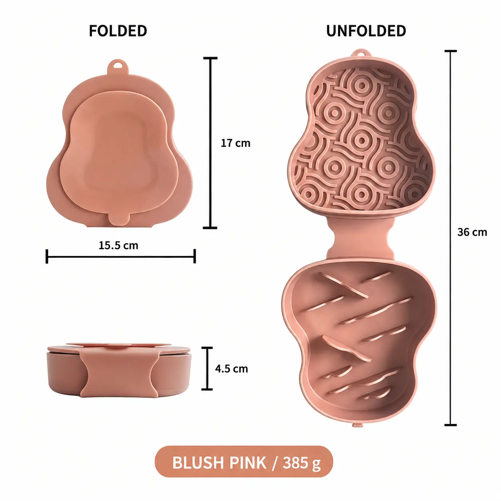
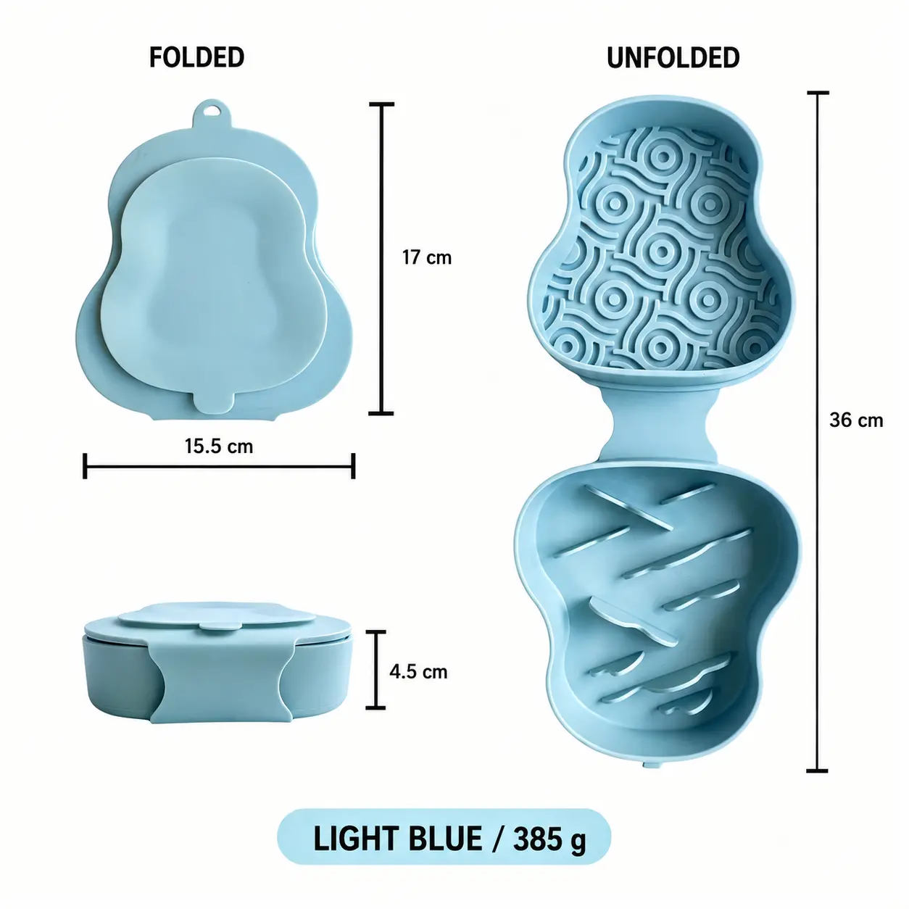
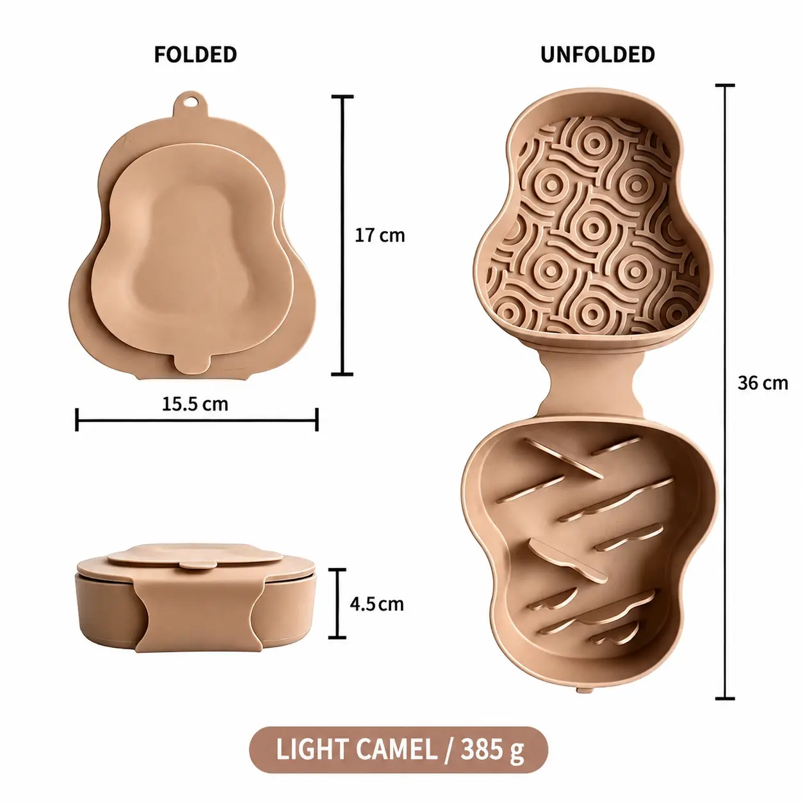

Dog Licking Ball & Rolling Slow Feeder Bowl
S: 170g · L: 335g · 5 colors · Suction base · SKU DB-001
View Product





Available in 5 colors: Olive Green, Blush Pink, Light Blue, Mocha Brown, Light Camel. Custom colors available for OEM orders.
| Material | Food-grade silicone (LFGB / FDA tested) |
|---|---|
| Folded Size | 17 × 15.5 × 4.5 cm |
| Unfolded Size | 38 × 15.5 × 4.5 cm |
| Weight | Approx. 385 g |
| Colors | Olive Green, Blush Pink, Light Blue, Mocha Brown, Light Camel |
| MOQ | From 10 pcs (stock colours) · custom colour or logo quoted on request |
| Sample Lead Time | Approx. 7 days |
| Production Lead Time | 15–25 days after sample approval |
| Customization | Logo, color, packaging available |
| Certifications | LFGB · FDA · REACH · RoHS |
| Packaging | Individual OPP bag (custom color box available) |
| Carton | 50 × 35 × 30 cm, 40 pcs/carton, approx. 16.5 kg |
| Pet Size | Small / medium / large dogs and cats |
| SKU | DB-002 |
A silicone folding dog bowl built as two bowls in one: one side is a slow-feeder bowl with a maze pattern for dry kibble, the other side is a shallow ridged bowl for water, wet food or raw food. The two bowls are joined by a flexible silicone hinge, so they fold together into a single compact unit that measures 17 × 15.5 × 4.5 cm and opens into a 38 cm double bowl.
For dogs that gulp their food in seconds, this portable bowl works like a compact dog food bowl for fast eaters: the maze ridges, circles and channels force the dog to work around them to reach each piece of kibble, extending mealtime and turning feeding into a short enrichment session. It is a practical, lightweight alternative to a full-size slow feeder bowl — and a silicone slow feed dog bowl that can travel in a weekend bag without breaking the slow-feeding routine.
Folded, the bowl hangs from a backpack or fits into a car door pocket; unfolded, it becomes a proper feeding station away from home. It is designed for the growing pet travel bowls category: an outdoor water bowl for dogs on hikes and camping trips, a dog water bowl for the car on road trips, and a stable food bowl for hotel stays, dog-friendly cafés and visits. The 385 g body and wide base keep it stable on most surfaces while remaining light enough to carry all day.
Not every collapsible dog bowl is built the same way. A collapsible silicone dog bowl stays flexible, has no rigid hinge that can fatigue and crack, is dishwasher safe and does not trap food in creases. A silicone foldable bowl also supports full Pantone color matching and logo work without new tooling, which is what most private-label buyers need. Plastic (PP or TPR) collapsible bowls are cheaper per unit but stiffen at the crease and limit customization; fabric options are useful for dry treats but not for water or wet food.
Made from food-grade silicone tested to LFGB and FDA standards. The material is BPA-free, PVC-free, odorless and soft enough that it does not chip, crack or rattle in a bag. It stays flexible after repeated folding, is safe for both dry and wet food contact, and can be frozen with wet food or broth for a longer-lasting treat.
Rinse under a tap or place it on the top rack of a dishwasher. The bowl opens completely, so the maze grooves dry without trapping food residue — a common problem with fixed slow feeder bowls. Because the material is non-porous, it does not retain food odors or bacteria between uses.
Stock colors are Olive Green, Blush Pink, Light Blue, Mocha Brown and Light Camel. Custom Pantone colors, embossed or printed logos, individual OPP bags and printed color boxes are available, which makes this custom collapsible dog bowl practical for brands testing a travel or slow-feeding SKU. Sample lead time is about 7 days; production runs 15–25 days after sample approval.
Each bowl weighs about 385 g and 40 pieces fit in one 50 × 35 × 30 cm carton (approx. 16.5 kg), which keeps freight and FBA prep costs low for a travel product. Before ordering, verify four things: the actual LFGB or FDA test report for the silicone grade, fold-and-unfold durability on a sample, folded and unfolded dimensions, and packaging (OPP bag or printed color box). This 2-in-1 folding bowl suits Amazon FBA sellers, pet brands and wholesale distributors adding a compact feeding SKU.

Olive Green

Mocha Brown

Blush Pink

Light Blue

Light Camel
Folded: 17 × 15.5 × 4.5 cm. Unfolded: 38 × 15.5 × 4.5 cm. Weight: approx. 385 g. The unfolded length gives each bowl roughly 15.5 cm of diameter.
Yes. One side is the slow-feeder maze for dry kibble and the other side is a ridged bowl for water or wet food. Both sides are open at the same time when the bowl is unfolded.
No. The two bowls fold face to face for carrying, but this is not a sealed water container. We recommend emptying the water before folding and using it as a travel feeding bowl.
Yes. The 4.5 cm depth and flexible silicone suit small and medium breeds, while the 385 g body and wide base stay stable for larger dogs. Cats and small pets can use it as well.
MOQ depends on color mix and customization. Contact us with your target quantities and market, and we will send wholesale pricing and MOQ options within 12 hours.
Yes. We ship FBA-ready to the US, UK and EU markets, and we can print FNSKU labels and pack to your carton requirements. Sample lead time is about 7 days.
Get wholesale pricing, request a sample, or discuss OEM customization — we reply within 12 hours.
Marvin Bai — Sales Manager
📧 marvin@szqidian.net
📱 +86 159 1412 0274
Shenzhen Qidian Electronic Technology Co., Ltd.